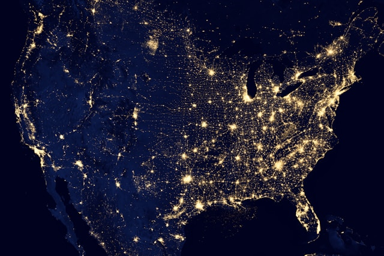

Hello, I'm Lucas Scellos
Mid-Level Data Scientist specializing in Geospatial & Climate Change projects.
Currently at Axionable – helping clients achieve Trustworthy AI Certification under the EU AI Act.
Double degree from INSA and ETS Montreal.

Who I Am
I am a Data Scientist with a passion for leveraging geospatial and climate data to drive impactful solutions. With expertise in climate modeling, data pipelines, and trustworthy AI methodologies, I help organizations transform complex challenges into actionable insights.

What I Do
My skills include:
- Programming & Tools: Python, Git, Bash, Java, C
- Libraries: Xarray, (Geo)Pandas, Scikit-Learn, Folium, Shap
- Machine Learning: Supervised, Unsupervised, and Reinforcement Learning
- Tech Tools: Cloud (AWS, GCP), Docker, Web Scraping, and Cybersecurity
- Regulatory Expertise: Trustworthy AI methodologies and compliance with AI regulations
Current Experience
Mid-Level Data Scientist @ Axionable (7+ Consulting Missions)
- Exposure Measurement (2023-2024): Scientific research and algorithm development for predicting natural catastrophe attribution and quantifying climate change damage using climate data (Netcdf, Xarray, GeoPandas) and distributed computing (Spark on GCP).
- Climate Risk Calculation (2024): Developing vulnerability scores for financial assets by modeling various climate scenarios (using Netcdf/GRIB data from Copernicus and Drias).
- Trustworthy AI Methodology (2024): Consulting on AI project documentation and methodologies to support LNE certification in accordance with the EU AI Act.
Other Experience
Junior Data Scientist @ Axionable (2023): Technical consultancy for Trustworthy AI certification and climate projects.
Data Engineer Intern @ Thales (2022): Designed a search engine database using OpenSearch/ELK and object storage with minIO;
automated web scraping (Scrapy, Selenium) under strict cybersecurity constraints.
Data Engineer Intern @ Akeneo (2021): Designed of machine learning pipeline; Data Analysis on the use of the application by customers; Work with Google Cloud Platform, SQL database
Education & Projects
Education:
M.Sc. in Information Technology, ETS Montreal (2021–2022)
Engineer Diploma in Information Technology, INSA Rouen (2017–2022)
Projects:
Smart IoT Weather Station on AWS (2023), Bike Sharing Visualization and Prediction (2022), Personal Chatbot with BERT (2021), and various initiatives promoting science and technology.
My Side Project
Let's Connect
Reach out to discuss data science, AI, climate projects, or collaborations.
Phone: (+33) 6.68.55.06.53
Email: luscellos+pro@gmail.com